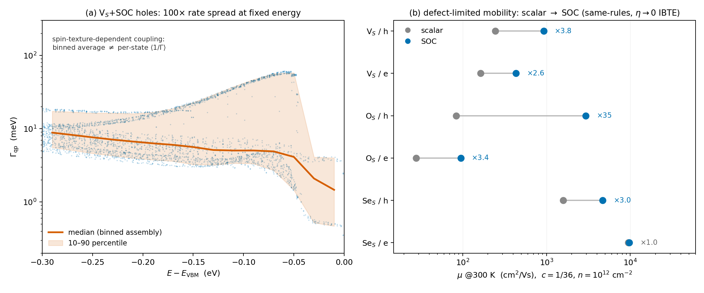

1 · What changes in the transport bookkeeping
All engines consume the same downfolded active-space vertex $\tilde V(\omega_0)$ (22 spinor bands 13–34; $\tilde\chi$ folded into the rest space where augmented) and the 22-WF spinor Wannier gauge for band energies and velocities. Two bookkeeping changes relative to the scalar mobility page:
- Spin degeneracy $g_s=2\to1$. The spinor manifold carries both spin channels explicitly; carrier-density bisection and conductivity sums count each spinor state once. (At fixed $n_c$ the factor largely cancels between $\mu_c$ placement and the transport sum — but the bookkeeping must be consistent; 15 occurrences across the three engines.)
- Same conventions otherwise: $\Sigma = c\,N_k\,T_{ss}(\omega)$ with $c=1/36$, $n=10^{12}$ cm$^{-2}$, four temperatures, transport windows $\pm0.45$ eV from the band edges, identical numerical tiers (IBTE $N_{\rm int}{=}24,\ \eta{=}25$ meV; Kubo 300$^2$ grid, $\eta{=}1$ meV, 480$^2$ host boxes; Koster–Slater ladder $N_W=96/144/192$ with $\eta=600/N_W$ meV on the 480$^2$ binned continuum host).
2 · Finite-$\eta$ tiers disqualify themselves
SOC weakens the scattering (next section), and both finite-$\eta$ tiers duly ran into their own guard rails:
- IBTE at $\eta=25$ meV over-broadens near-edge resonances. Example: it reported V$_S$ electron mobility halved by SOC (87 vs scalar 165) — an artifact of smearing the CBM$+12$–$17$ meV shallow resonance pair across the transport window; the $\eta\to0$ answer is $\times2.6$ the scalar value, opposite sign of change.
- Kubo at $\eta=1$ meV fired its under-resolution audit on every hole channel: 72–99% of the 300 K transport weight sits on states with $\Gamma<1$ meV — beyond the resolution of the $\eta=1$ meV host boxes.
Both numbers classes are reported in the data files but are not quotable; the continuum Koster–Slater route (exact $\eta\to0^+$ host Green function, the scalar campaign's §E.7 authority) is the production tier.
3 · The assembly discovery: binned $\Gamma(\varepsilon)$ fails under SOC
The Koster–Slater engine's scalar-era design computed per-state rates on the $N_W^2$ window grid, binned them into an energy curve $\Gamma(\varepsilon)$, and interpolated that curve onto the fine transport grid. With SOC this is no longer benign:
The two spin-split sheets coexisting at the same energy couple to the defect with $\sim$100$\times$ different strength (spin-texture selection); the transport average $\langle\tau v^2\rangle$ is harmonic in $\Gamma$ and is dominated by the weakly-coupled (spin–valley-protected) states, which the binned mean erases. Near the edge $\langle 1/\Gamma\rangle^{-1}/\Gamma_{\rm median}=0.43$–$0.57$ — a factor-2-per-bin bias that compounds to 2–3.5$\times$ underestimated hole mobilities.

Fix and validation. The engine now sums $\tau_s v_s^2(-\partial f)$ per window state for all three tiers (SERTA $\tau=\hbar/\Gamma_s$; tr-RTA; IBTE — whose linearized solve was per-state all along, only the readout was binned). The machine gate: the independent Kubo K1 tier is per-state by construction, and K1 vs per-state SERTA now agrees to 0.2–5% in every channel Kubo can resolve (9 of 12 cells across both campaigns; the failures are exactly the cells pre-flagged by Kubo's own under-resolution audit). Diagnostic chain for the record: rate-scale audit (KS vs Kubo medians 0.98–1.07 — not a data bug) → bin-spread percentiles → per-state patch → K1 gate.
4 · Same-rules verdict and the physics
Both campaigns evaluated with the identical per-state continuum pipeline ($N_W=192$, IBTE, 300 K, $c=1/36$, $n=10^{12}$ cm$^{-2}$, cm$^2$/Vs):
| defect | $\mu_h$: scalar $\to$ SOC | $\mu_e$: scalar $\to$ SOC | ||
|---|---|---|---|---|
| V$_S$ | 245 $\to$ 926† | $\times$3.8 | 164 $\to$ 432 | $\times$2.6 |
| O$_S$ | 84 $\to$ 2943 | $\times$35 | 28 $\to$ 95 | $\times$3.4 |
| Se$_S$ | 1584 $\to$ 4686 | $\times$3.0 | 9468 $\to$ 9711 | $\times$1.03 |
†V$_S$/h still drifts upward along the $\eta=600/N_W$ ladder ($761\to853\to926$ at $\eta=6.25/4.17/3.12$ meV); 926 is a lower bound, trend $\sim$1050. All other channels are $N_W$-converged to 1–2%.
- Spin–valley locking sets the hole baseline ($\times$2.6–3.8). The 149 meV valence splitting locks spin to valley at K/K$'$: intervalley backscattering requires a spin flip the defect cannot supply, and the same-spin intravalley phase space halves. Both effects lengthen $\tau_h$ for every defect.
- O$_S$ holes $\times$35: resonance restructuring on top of locking. The scalar O$_S$ VBM-edge resonance made it the deadliest hole scatterer (84); under SOC the resonance family redistributes across the split sheets and its overlap with thermal holes collapses. Validated by the K1 gate at the 5% level — not a numerical artifact.
- Se$_S$ electrons $\times$1.03: the built-in control. Benign isovalent defect + 3 meV conduction splitting → nothing should change, and nothing does.
- Electron channels ($\times$2.6–3.4 for V$_S$/O$_S$): no valley protection (3 meV splitting), so the gains trace to the SOC-reshaped defect spectra (T-matrix magnitudes), not to phase-space topology.
5 · Consequences for the scalar page, and pitfalls
Scalar-campaign flag. The same-rules rerun shows the scalar published finals (mobility page: O$_S$ 410/67, V$_S$ 211/166, Se$_S$ 453/1046) carry the binned-assembly bias where the scalar $\Gamma(\varepsilon)$ distribution was broad: V$_S$ is essentially unchanged (245/164 per-state), but O$_S$ holes revise down (410 $\to$ 84: the binned curve diluted the VBM-edge resonance) and Se$_S$ revises up (1584/9468: tiny rates were $\eta$-floored in the ladder tiers). A revision note for the scalar page is pending.
- $g_s$: 15 hard-coded spin factors across three engines; a single missed site silently corrupts either $\mu_c$ or $\sigma$.
- Energy-binned rate curves are a scalar-era luxury — legal only while $\Gamma(\varepsilon)$ is single-valued. Any spin/orbital texture that splits the coupling strength at fixed energy demands per-state assembly.
- Harmonic sensitivity cuts both ways: per-state sums are dominated by the smallest resolved $\Gamma$ — the continuum host (no $\eta$ floor) is mandatory, and the Kubo under-resolution audit is the honest gatekeeper for any finite-$\eta$ tier.
- Cross-engine agreement is the only currency: every quotable number here is double-booked by two independent engines (K1 vs per-state SERTA) or pre-flagged as unresolvable by one of them.